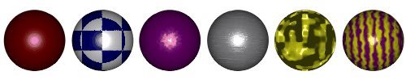

Example Combiner Materials
Combiners are materials that combine two or more other materials together to make a new material. Most materials are a combination of two or more other attributes and will fall into this category. For example, marble is a mixture of a light colored attribute and a dark colored attribute combined in an interesting fashion. Remember that a materials attributes include more than just color: there is also ambiance, specularity, roughness, transparency, mirror, and refraction.
The combining of two attributes in interesting ways is the secret of Perlin's textures. Marble is alternating slabs of attributes, one thin, the next thick, and the slabs flow randomly into each other. So, the two attributes are "combined" as slabs (slabs are a degenerate case of checker where one direction is infinitely long), then mixed up with some "turbulence".
Wood is a combination of four attributes, two combiners, and some turbulence. Two tan attributes, one darker than the other, are combined with streaked noise; as are two brown attributes. The resulting combinations are then combined cylindrically (cylinders are a degenerate case of spherical where one axis is infinitely long) to create the grain, then mixed up a little bit with some turbulence.
Materials are displayed with a combination tree so that you can get a visual representation of what is happening. If you click on any of the tree’s nodes, the appropriate fields appear on the Properties Panel.
Related Topics:
About Materials
Attributes
Turbulence
Checker Combiner
Gradient Combiner
Noise Combiner
Spherical Combiner